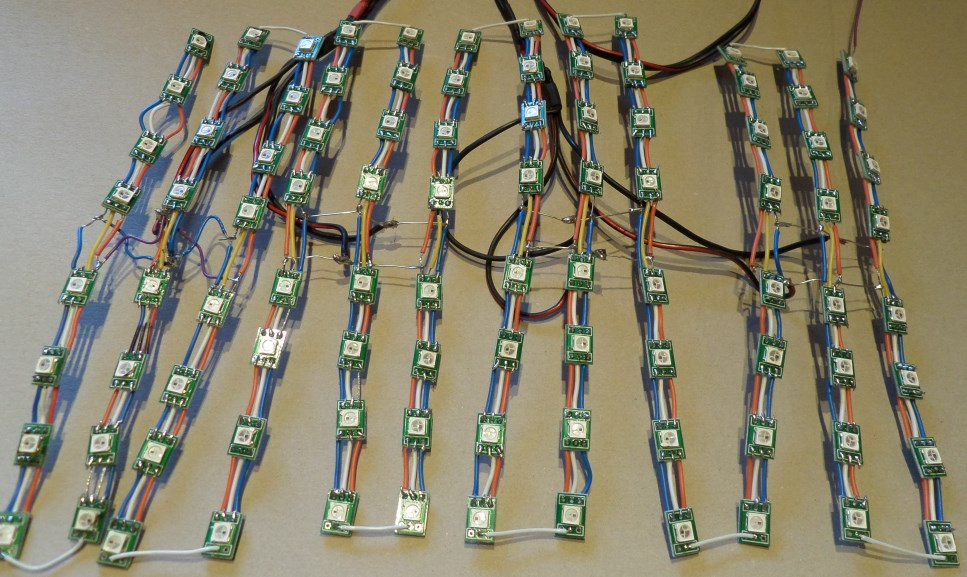

De Hardware
De hardware van dit project is gebaseerd op het RIOT bord van M Roggemans en D Pauwels. Meer informatie over dit bord is hier te vinden.
De controllers
Dit project gebruikt 2 controllers, een AVR ATMega128A en een Beck SC12. De reden hiervoor is dat de SC12 ingebouwde ethernet-mogelijkheden heeft, maar niet snel genoeg is om de zeer timings kritieke LEDs aan te sturen. Ook het lage aantal beschikbare pinnen op de SC12 was een probleem. Om deze problemen op te lossen is er dus een AVR microcontroller toegevoegd. Die is wel in staat de LEDs aan te sturen, en heeft genoeg pinnen beschikbaar om nog een LCD aan te sturen en keypad uit te lezen. De communicatie tussen de AVR en de SC12 gebeurt door middel van een gedeeld geheugen (een dual-port RAM chip).
![[Het RIOT bord en mijn eigen versie]](assets/img/boards.jpg) Links: RIOT bord, Rechts: Eigen PCB
Links: RIOT bord, Rechts: Eigen PCB
Op mijn versie van het bord zijn onnodige onderdelen weggelaten. Onder andere de UART naar RS232, de Real Time Clock en het voedingscircuit moesten er aan geloven.
Het interactieschema
![[Flowchart Hardware]](assets/img/hardware.png) Links: RIOT bord, Rechts: Eigen PCB
Links: RIOT bord, Rechts: Eigen PCB
De SC12 zorgt voor de webinterface, een AVR ATMega128 stuurt de LCD en LEDs aan.
De LEDs
Omdat een volledig mastermind bord 12 x 8 = 96 RGB LEDs nodig heeft, heb ik gekozen voor WS2812 LEDS. Deze LEDs hebben, ongeacht de hoeveelheid, slechts 1 signaalpin op een (snelle) controller nodig. Ze worden namelijk als een lange lijn aan elkaar gekoppeld.
![[De LEDs en voeding]](assets/img/leds_psu.jpg) De losse LEDs, nog in verpakking met de voeding
De losse LEDs, nog in verpakking met de voeding
Een ander probleem met 96 RGB LEDs is dat ze veel stroom kunnen verbruiken, namelijk 60 mA per LED. 6A in totaal dus. Daarom heb ik een professionele voeding gekocht van 35W @ 5V.
Het afgewerkte LED scherm
De PCBs
Ik heb voor dit project zelf printplaten getekend (met Altium)
![[De printplaten]](assets/img/pcbs.jpg) De overgebleven, onbestukte printplaten
De overgebleven, onbestukte printplaten
De grote printplaat is gebaseerd op het RIOT board. Er zitten een paar schoonheidsfoutjes in het ontwerp, maar niets dat niet met een beetje geduld en wat software kan worden opgelost.
De kleine printplaatjes zijn bedoeld om het aansluiten van een LCD module gemakkelijk te maken. Ze zijn ontworpen om ook gebruikt te worden in andere projecten. Zo is er plaats voorzien voor de extra componenten, nodig voor de achtergrondverlichting, omdat die vaak verschillen per model.
Voor de LEDs zijn aparte panel printen besteld. 100 kleine breakout printjes per panel, zodat ik uiteindelijk (na het opblazen of verbranden van enkele) net voldoende had met 1 panel. Het solderen van de LEDs op het panel en het verbinden heeft wel wat tijd gekost, het leveren duurde ook langer dan verwacht.
![[Een LED panel]](assets/img/ledpanel.jpg) De LED panel PCBs, de zwart gekleurde LEDs zijn stuk.
De LED panel PCBs, de zwart gekleurde LEDs zijn stuk.